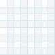
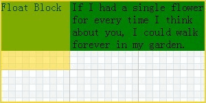
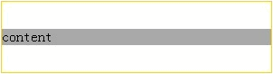

RM8002: 不能同时在 IE6 IE7 IE8(Q) 中触发 hasLayout 并在其他浏览器中创建 Block Formatting Context 的元素在各浏览器中的表现会有差异
标准参考
Block Formatting Context （块格式化上下文）是 W3C CSS 2.1 规范中的一个概念，它决定了元素如何对其内容进行定位，以及与其他元素的关系和相互作用。
在创建了 Block Formatting Context 的元素中，其子元素会一个接一个地放置。垂直方向上他们的起点是一个包含块的顶部，两个相邻的元素之间的垂直距离取决于 'margin' 特性。在 Block Formatting Context 中相邻的块级元素的垂直边距会折叠（collapse）。
在 Block Formatting Context 中，每一个元素左外边与包含块的左边相接触（对于从右到左的格式化，右外边接触右边）， 即使存在浮动也是如此（尽管一个元素的内容区域会由于浮动而压缩），除非这个元素也创建了一个新的 Block Formatting Context 。
浮动元素、绝对定位元素、inline-blocks、table-cells、table-captions 以及 'overflow' 值不是 'visible' 的元素，会创建 Block Formatting Context。
关于 Block Formatting Context 的详细信息，请参考 W3C CSS 2.1 9.4.1 Block formatting contexts。
问题描述
在 IE6 IE7 IE8(Q) 中没有触发 hasLayout 并在其他浏览器中创建了 Block Formatting Context 的元素的表现会有差异。
造成的影响
可能造成在不同浏览器下页面布局表现各异。
受影响的浏览器
| 所有浏览器 |
|---|
问题分析
1. IE 专有的 Layout 及 hasLayout 属性
'Layout' 是 IE 的专有概念，它决定了元素如何对其内容进行定位和尺寸计算，与其他元素的关系和相互作用，以及对应用还有使用者的影响。
-
概念说明：
- 'Layout' 可以被某些 CSS property（特性）不可逆的触发，而某些 HTML 元素本身就具有 layout 。
- 'Layout' 在 IE 中可以通过 hasLayout 属性来判断一个元素是否拥有 layout ，如 object.currentStyle.hasLayout 。
- 'Layout' 是 IE 浏览器渲染引擎的一个内部组成部分。在 IE 浏览器中，一个元素要么自己对自身的内容进行组织和计算大小， 要么依赖于包含块来计算尺寸和组织内容。为了协调这两种方式的矛盾，渲染引擎采用了 'hasLayout' 属性，属性值可以为 true 或 false。 当一个元素的 'hasLayout' 属性值为 true 时，我们说这个元素有一个布局（layout），或拥有布局。
-
触发方式：
-
默认拥有布局的元素：
<html>, <body> <table>, <tr>, <th>, <td> <img> <hr> <input>, <button>, <select>, <textarea>, <fieldset>, <legend> <iframe>, <embed>, <object>, <applet> <marquee>
-
可触发 hasLayout 的 CSS 特性：
display: inline-block height: (除 auto 外任何值) width: (除 auto 外任何值) float: (left 或 right) position: absolute writing-mode: tb-rl zoom: (除 normal 外任意值)
-
IE7 还有一些额外的属性(不完全列表)可以触发 hasLayout ：
min-height: (任意值) min-width: (任意值) max-height: (除 none 外任意值) max-width: (除 none 外任意值) overflow: (除 visible 外任意值，仅用于块级元素) overflow-x: (除 visible 外任意值，仅用于块级元素) overflow-y: (除 visible 外任意值，仅用于块级元素) position: fixed
- IE6 以前的版本（也包括 IE6 及以后所有版本的混杂模式，其实这种混杂模式在渲染方面就相当于 IE 5.5）， 通过设置任何元素的 'width' 或 'height'（非auto）都可以触发 hasLayout ； 但在 IE6 和 IE7 的标准模式中的行内元素上却不行，设置 'display:inline-block' 才可以。
-
默认拥有布局的元素：
2. hasLayout 和 block formatting context 的特点
2.1. 在触发 hasLayout 的元素和创建了 Block Formatting Context 的元素中，浮动元素参与高度的计算
情况1：没有创建 block formatting context 的块级非替换元素，触发了 IE 的 hasLayout。
分析以下代码：
<div style="width:300px;">
<div id="Container" style="background:silver; zoom:1;">
<span id="SPAN1" style="background:gray;">simple text</span>
<div id="DIV1" style="width:150px; height:50px; background:dimgray;">in flow</div>
<div id="DIV2" style="float:left; background:gold;">float:left</div>
</div>
</div>
- Container 没有创建 block formatting context。
- Container 的 'zoom:1'设置，是为了触发 IE 中的 hasLayout；
- Container 的高度值为 auto，并且 'overflow' 的值为默认的 'visible'；
- SPAN1 是一个行内元素， DIV1 是一个处于普通流中的块元素；
- DIV2 是一个浮动的块级元素。
根据 CSS2.1 规范第 10.6.3 部分的高度计算规则，在进行普通流中的块级非替换元素的高度计算时，浮动子元素不参与计算。
所以，在进行 Container 高度计算时，只受 SPAN1 和 DIV1 的影响，应该是它们两个的高度之和，所以最终银色部分不应该包含金色的部分。
这段代码在不同的浏览器环境中表现如下：
| IE6 IE7 IE8(Q) | IE8(S) Firefox Chrome Safari Opera |
|---|---|
 |
 |
去掉 Container 的 'zoom:1' 后，各浏览器表现一致：
可见，IE 浏览器中，触发 hasLayout 的元素在进行高度计算的时候，其浮动的子元素也会参与运算。
情况2：创建了 block formatting context 的块级非替换元素，未触发 IE 的 hasLayout。
分析以下代码：
<div style="width:300px;">
<div id="Container" style="background:silver; overflow:hidden;">
<span id="SPAN1" style="background:gray;">simple text</span>
<div id="DIV1" style="width:150px; height:50px; background:dimgray;">in flow</div>
<div id="DIV2" style="float:left; background:gold;">float:left</div>
</div>
</div>
- Container 的 'overflow:hidden;' 创建了 block formatting context；
- Container 的 'overflow:hidden;'，在 IE6 中未触发 hasLayout，但在 IE7(S) 中触发了 hasLayout；
- Container 的高度值为 'auto'；
- SPAN1 是一个行内元素，DIV1 是一个处于普通流中的块元素；
- DIV2 是一个浮动的块级元素。
根据 CSS2.1 规范第10.6.7部分的高度计算规则，在计算生成了 block formatting context 的元素的高度时，其浮动子元素应该参与计算。
所以，在进行 Container 高度计算时，DIV2 也应该参与计算，所以最终银色部分应该包含金色的部分。
这段代码在不同的浏览器环境中表现如下：( 注意 IE7(S) 此时触发了 hasLayout )
| IE6 IE7(Q) IE8(Q) | IE7(S) IE8(S) Firefox Chrome Safari Opera |
|---|---|
|
|
可见，只要 Container 创建了 block formatting context，其浮动子元素就会参与其高度计算（IE7(S) 是由于 hasLayout 导致与其他浏览器的效果相同）。
2.2. 与浮动元素相邻的、触发了 hasLayout 的元素或创建了 Block Formatting Context 的元素，都不能与浮动元素相互覆盖
与浮动元素相邻的、触发了 hasLayout 的元素或创建了 block formatting context 的元素，都不能与浮动元素相互覆盖。如果浮动元素的两侧有足够的空间放置该元素，则元素会紧邻浮动元素放置，必要时，该元素的宽度将会被压缩。否则它们可能会定位到浮动元素的下方。
情况1：没有创建 block formatting context 的块级非替换元素，触发了 IE 的 hasLayout。
分析以下代码：
<div id="Container" style="border:2px solid gold; width:300px; height:150px; background:url("grid2a.png") repeat;">
<div id="DIV1" style="background-color:gold; width:100px; height:100px; float:left; filter:alpha(opacity=50); opacity: 0.5;">
Float Block
</div>
<div id="DIV2" style="background-color:green; zoom:1;">
If I had a single flower for every time I think about you, I could walk forever in my garden.
</div>
</div>
- DIV1 是一个浮动元素，背景是 50% 的透明
- DIV2 的 'zoom:1' 触发了 IE 中的 hasLayout。
其中，grid2a.png 背景是 100px * 100px 的图片：

根据 CSS 2.1 9.5 Floats 中的描述，浮动元素会覆盖普通流中的块容器。所以，DIV2 应该有一部分呢被 DIV1 覆盖。
这段代码在不同的浏览器环境中表现如下：(忽略 IE 中 3px BUG 的影响)
| IE6 IE7 IE8(Q) | IE8(S) Firefox Chrome Safari Opera |
|---|---|
 |
 |
情况2：创建了 block formatting context 的块级非替换元素，未触发 IE 的 hasLayout。
分析以下代码：
<div id="Container" style="border:2px solid gold; width:300px; height:150px; background:url("grid2a.png") repeat;">
<div id="DIV1" style="background-color:gold; width:100px; height:100px; float:left; filter:alpha(opacity=50); opacity: 0.5;">
Float Block
</div>
<div id="DIV2" style="background-color:green; overflow:hidden;">
If I had a single flower for every time I think about you, I could walk forever in my garden.
</div>
</div>
- DIV1 是一个浮动元素，背景是50%的透明
- DIV2 的 'overflow:hidden;' 在 IE6 中未触发 hasLayout，但在 IE7(S) 中触发了 hasLayout。
根据 CSS 2.1 9.5 Floats 中的描述，创建了 Block Formatting Context 的元素不能与浮动元素重叠， 所以，DIV2 应该有一部分被 DIV1 覆盖。
这段代码在不同的浏览器环境中表现如下：( 注意 IE7(S) 此时触发了 hasLayout )
| IE6 IE7(Q) IE8(Q) | IE7(S) IE8(S) Firefox Chrome Safari Opera |
|---|---|
|
2.3. 触发 hasLayout 的元素和创建了 Block Formatting Context 的元素不会与它们的子元素发生外边距折叠
情况1：没有生成 block formatting context 的块级非替换元素，触发了 IE 的 hasLayout。
分析以下代码：
<div id="Container" style="width:300px; border:1px solid gold;"> <div id="DIV1" style="zoom:1; background:darkgray;"> <div id="DIV2" style="margin:30px 0; width:60px;">content</div> </div> </div>
- Container 是宽度为300px，含有 border 的块元素，根据标准，它不会与子元素的 margin 发生空白边折叠。
- DIV1 的宽度没有设置，所以宽度等于 Container 的宽度。
- DIV1 的高度也没有设置，所以其高度取决于其内容的高度。
- DIV1 设置了 'zoom:1'，在 IE 中触发了 hasLayout。
根据 CSS 2.1 8.3.1 Collapsing margins 第一条，两个相邻的普通流中的块框在垂直位置的空白边会发生折叠现象。
DIV1 和 DIV2 应该发生空白边折叠，深灰色的 DIV1 应该刚好包含 'content' 文本。
这段代码在不同的浏览器环境中表现如下：
| IE6 IE7 IE8(Q) | IE8(S) Firefox Chrome Safari Opera |
|---|---|
|  |
可见，在 IE 中，触发 hasLayout 的元素，阻止了它自身与子元素间的空白边折叠。
情况2：生成 block formatting context 的块级非替换元素，未触发 IE 的 hasLayout。
分析以下代码：
<div id="Container" style="width:300px; border:1px solid gold;">
<div id="DIV1" style="overflow:hidden; background:darkgray;">
<div id="DIV2" style="margin:30px 0; width:60px;">content</div>
</div>
</div>
- Container 是宽度为300px，含有 border 的块元素，根据标准，它不会与子元素的 margin 发生空白边折叠。
- DIV1 的宽度没有设置，所以宽度等于 Container 的宽度。
- DIV1 的高度也没有设置，所以其高度取决于其内容的高度。
- DIV1 设置了 'overflow:hidden'，在 IE6 中未触发 hasLayout，但在 IE7(S) 中触发了 hasLayout。
根据 CSS 2.1 8.3.1 Collapsing margins 第三条，生成 block formatting context 的元素不会和在流中的子元素发生空白边折叠。
DIV1 和 DIV2 不应该发生空白边折叠，深灰色的 DIV1 应该撑满 Container 。
这段代码在不同的浏览器环境中表现如下：( 注意IE7(S) 此时触发了 hasLayout )
| IE6 IE7(Q) IE8(Q) | IE7(S) IE8(S) Firefox Chrome Safari Opera |
|---|---|
可见，在 IE 中，创建了 block formatting context，未触发 hasLayout 的元素，它自身与子元素间的空白边折叠还是会发生。
3. hasLayout 和 block formatting context 的异同及可能产生的问题
3.1. 区别
- 在 IE8(S) 之前的版本中，没有规范中提及的 block formatting context 和 Inline formatting context 概念，而是用 hasLayout 来达到相似的目的。
- 在 IE 中可通过设置 'width'、'height'、'min-width'、'min-height'、'max-width'、'max-height'、'zoom'、'writing-mode' 来触发 hasLayout，而这些特性值的设置不能够使元素创建 block formatting context。
- 在 IE 中很多元素默认就是拥有布局的，如 IPUNT, BUTTON, SELECT, TEXTAREA 等，但是这些元素在标准中会形成 Inline formatting context 。
3.2. 共同点
- 两者都是决定了对内容如何定位及大小计算的规则。
- 两者都决定了与其他元素的相互作用的规则。
- 'table-cell' 和 'table-caption' 既是 hasLayout 的元素，又是可以创建 block formatting context 的元素。
- 浮动元素，绝对定位元素，inline-block 元素以及除 'visible' 外任意值的 overflow(IE7) 在 IE 中可以触发 hasLayout，同时在标准中，又可以创建 block formatting context。
3.3. 可能产生的兼容性问题：
由于 hasLayout 和 block formatting context 是对一类事物的不同理解，并且他们的启用条件不尽相同，因此如果一个元素设计时，在 IE 早期版本中触发了 hasLayout ，但在其他浏览器中又没有创建 block formatting context，或者相反，一个元素在 IE 早期版本中没有触发 hasLayout ，在其他浏览器中却创建了 block formatting context（如设置了 'overflow:hidden' ），将导致页面布局的重大差异。
解决方案
仅当一个元素即在 IE 早期版本中触发了 hasLayout，又在其他浏览器中创建了 block formatting context 时，才能避免上述问题的发生。即同时启用上述两者以保证各浏览器的兼容，或者相反，两者皆不启用。
- 使元素即生成了 block formatting context，又触发了 hasLayout
- 对于触发 hasLayout 的元素，通过 CSS 设置，使它产生 block formatting context；
- 生成 block formatting context 但是没有触发 hasLayout 的元素，通过设置 'zoom:1'，使其触发 hasLayout。
- 使元素即没有触发 hasLayout，又没有创建 block formatting context。
参见
知识库
相关问题
测试环境
| 操作系统版本: | Windows 7 Ultimate build 7600 |
|---|---|
| 浏览器版本: |
IE6 IE7 IE8 Firefox 3.6 Chrome 4.0.302.3 dev Safari 4.0.4 Opera 10.60 |
| 测试页面: | height_of_float_hasLayout.html height_of_float_BFC.html float_overlap_hasLayout.html float_overlap_BFC.html collapsing_hasLayout.html collapsing_BFC.html |
| 本文更新时间: | 2010-07-23 |
关键字
hasLayout Block Formatting Context float